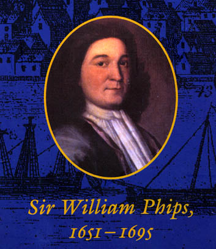

William Phips

|
Description: Portrait of Sir William
Phips. Oil painting by Thomas Child, Boston, ca. 1687-94.
Source: Cover illustration. The New England Knight: Sir William Phips, 1651-1695. By Emerson W. Baker and John G. Reid. University of Toronto Press, 1998. Photograph by Nicholas Dean, courtesy of the Gardiner family. |